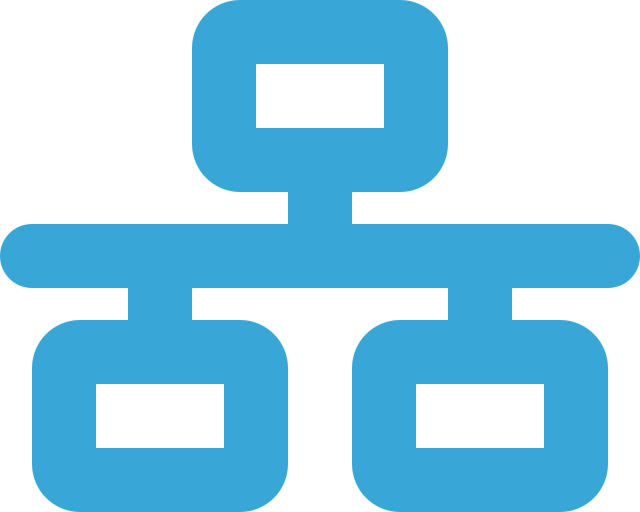

PEMBELAJARAN MESIN · PROYEK 04

Proyek 16 · Pembelajaran Mesin
Jaringan Saraf · Kerusakan Akibat Peristiwa Cuaca
Model klasifikasi diterapkan pada data Peristiwa Badai NOAA untuk memperkirakan kemungkinan kerusakan ekonomi yang tercatat dalam peristiwa cuaca. Proyek ini bekerja dengan informasi dari tahun 2010 hingga 2025, membandingkan regresi logistik dan jaringan saraf, dan mengevaluasi kinerjanya selama bertahun-tahun setelah digunakan untuk pelatihan.

KONTEKS DAN TUJUAN
Proyek ini menggunakan 1.037.691 peristiwa cuaca yang dicatat oleh NOAA Storm Events antara tahun 2010 dan 2025. Setiap catatan mencakup informasi tentang peristiwa yang diamati, tanggal dan lokasi, serta karakteristik cuaca dan jumlah kerusakan properti dan tanaman saat dilaporkan.
Dari data ini, variabel objektif ditentukan yang mengidentifikasi peristiwa-peristiwa dengan kerusakan ekonomi yang tercatat. Analisis tersebut memperkirakan kemungkinan hasil tersebut menggunakan informasi temporal, teritorial, dan meteorologi untuk setiap peristiwa. Agar prediksi bergantung pada karakteristik ini, jumlah kerusakan dan variabel lain yang secara langsung mengungkapkan respons tidak disertakan dalam rangkaian prediktor.
Dua model klasifikasi yang diawasi dibandingkan. Regresi logistik memungkinkan penetapan referensi statistik melalui koefisien yang terkait dengan variabel; Jaringan saraf menggabungkan fleksibilitas yang lebih besar untuk mempelajari hubungan di antara mereka. Model dilatih dengan data dari tahun 2010 hingga 2021, divalidasi dengan data tahun 2022 dan 2023, dan terakhir dievaluasi dengan peristiwa dari tahun 2024 dan 2025. Pembagian waktu ini memungkinkan kinerja model diukur dengan catatan yang lebih baru daripada yang digunakan untuk menyesuaikan setiap model.
MODEL DAN VALIDASI
Persiapan data dan definisi kerusakan yang tercatat
Pertama, file Acara Badai NOAA tahunan diunduh dan diintegrasikan ke dalam satu database. Nama dan jenis kolom, nilai yang hilang, dan konsistensi data selama bertahun-tahun ditinjau sebelum menyiapkan variabel untuk model.
Kerusakan properti dan tanaman muncul dalam file dalam satuan yang berbeda, misalnya ribuan atau jutaan. Nilai-nilai tersebut ditransformasikan ke dalam jumlah numerik yang sebanding dan ditambahkan untuk membentuk variabel yang menunjukkan apakah setiap peristiwa telah mencatat kerusakan ekonomi.
VARIABEL TUJUAN · TERCATAT KERUSAKAN EKONOMI
y_i=\mathbb{1}\left(D_{\text{properti},i}+D_{\text{tanaman},i}>0\right)
Indikator bernilai 1 ketika jumlah kerusakan material dan pertanian yang tercatat lebih besar dari nol, dan bernilai 0 dalam kasus lain. Untuk menyusunnya, jumlah tanpa jumlah yang dilaporkan diperlakukan sebagai nol. Oleh karena itu, model tersebut mengidentifikasi kerusakan yang dicatat dalam NOAA, yang belum tentu mewakili seluruh kerusakan yang mungkin terjadi.
Untuk membuat prediksi, 19 variabel sumber digunakan: sepuluh variabel numerik dan sembilan kategorikal. Diantaranya terdapat data tanggal, tempat, jenis peristiwa, besaran dan koordinat. Indikator juga dibuat untuk menunjukkan informasi yang hilang. Jumlah kerusakan dan kolom yang secara langsung mengungkapkan hasil tidak disertakan dalam prediktor, sehingga model dapat belajar dari karakteristik peristiwa tersebut.
Pembagian temporal dan penyusunan variabel
Catatan tersebut dipisahkan secara kronologis menjadi tiga set: 2010-2021 untuk pelatihan, 2022-2023 untuk validasi, dan 2024-2025 untuk ujian akhir. Periode pertama digunakan untuk memperkirakan model; kedua, memantau kinerjanya selama pembangunan; dan yang ketiga disediakan untuk perbandingan akhir pada data selanjutnya.
Sebelum melatih model, prapemrosesan umum diterapkan. Dalam variabel numerik, nilai yang hilang dilengkapi dengan median set pelatihan dan nilai distandarisasi agar berfungsi dengan skala yang sebanding. Variabel kategori ditransformasikan menggunakan pengkodean one-hot, yang membuat kolom indikator untuk kategori yang diamati. Pra-pemrosesan disesuaikan dengan data pelatihan dan kemudian diterapkan pada validasi dan pengujian tanpa menghitung ulang parameternya.
Regresi logistik sebagai model referensi
Regresi logistik menjadi model acuan analisis. Selama pelatihan, ia memperkirakan koefisien untuk setiap variabel yang ditransformasikan dan menggabungkan kontribusi ini menjadi skor yang merangkum kecenderungan peristiwa tersebut untuk menimbulkan kerusakan yang tercatat. Tanda setiap koefisien menunjukkan apakah suatu variabel menaikkan atau menurunkan skor tersebut, menjaga variabel lainnya tetap konstan; Besarnya mencerminkan bobot kontribusi tersebut pada skala model. Fungsi sigmoid mengubah hasil menjadi probabilitas antara 0 dan 1.
PERKIRAAN PROBABILITAS DENGAN REGRESI LOGISTIK
\hat{p}_i=\frac{1}{1+e^{-(\beta_0+\sum_j\beta_jx_{ij})}}
Dalam persamaan tersebut, x mewakili variabel setelah prapemrosesan dan β adalah koefisien yang diperkirakan dari data pelatihan. Sigmoid mengubah kombinasi linier menjadi probabilitas kerusakan ekonomi yang tercatat antara 0 dan 1.
Pelatihan ini mencakup regularisasi L2 untuk memoderasi koefisien yang terlalu besar dan mendukung estimasi yang lebih stabil ketika bekerja dengan banyak variabel yang diubah. Dengan demikian, regresi logistik memberikan titik perbandingan yang konkrit: probabilitas, keberhasilan, dan kesalahannya dibandingkan dengan probabilitas, keberhasilan, dan kesalahan jaringan saraf selama periode yang sama, untuk mengevaluasi seberapa besar kontribusi fleksibilitas yang lebih besar dari jaringan saraf tersebut.
Jaringan saraf dan perbandingan hasil
Dengan variabel yang sama telah disiapkan, jaringan saraf dengan lapisan padat dilatih. Tidak seperti regresi logistik, jaringan menggabungkan sinyal dalam beberapa tahap menggunakan bobot yang dipelajari selama pelatihan. Aktivasi ReLU memungkinkan Anda menangkap hubungan non-linier; dropout membantu mengurangi overfitting, dan lapisan terakhir menggunakan sigmoid untuk menyatakan prediksi sebagai kemungkinan kerusakan yang tercatat.
TRANSFORMASI DALAM LAPISAN TERSEMBUNYI
h^{(l)}=\mathrm{ReLU}\left(W^{(l)}h^{(l-1)}+b^{(l)}\right)
Di setiap lapisan, bobot W dan bias b mengubah informasi yang diterima. Fungsi ReLU memungkinkan jaringan mempelajari hubungan yang tidak dijelaskan oleh kombinasi linier murni.
PROBABILITAS JARINGAN SARAF
\hat{p}_i=\sigma\left(w^\top h_i+b\right)
Lapisan terakhir menerapkan fungsi sigmoid σ pada informasi yang dipelajari oleh jaringan dan mengembalikan probabilitas kerusakan yang tercatat untuk setiap kejadian.
Adam digunakan untuk melatih jaringan, yang menyesuaikan bobot berdasarkan kesalahan model, dan entropi silang biner digunakan untuk mengukur perbedaan antara probabilitas yang diprediksi dan hasil yang diamati. Validasi tindak lanjut memungkinkan penyesuaian kecepatan pembelajaran dan menghentikan pelatihan ketika peningkatannya berhenti, untuk membatasi overfitting.
KERUGIAN · ENTROPI SILANG BINER
\mathcal{L}=-\frac{1}{n}\sum_{i=1}^{n}\left[y_i\log(\hat{p}_i)+(1-y_i)\log(1-\hat{p}_i)\right]
Entropi silang membandingkan hasil pengamatan y dengan perkiraan probabilitas p̂. Semakin rendah nilainya, semakin baik probabilitasnya sesuai dengan hasil sebenarnya.
Perbandingan akhir dilakukan dengan ROC AUC dan PR AUC, yang mengevaluasi seberapa baik masing-masing model memisahkan kejadian kerusakan yang tercatat dari model lainnya. PR AUC sangat penting karena kejadian kerusakan positif lebih jarang terjadi. Matriks presisi, perolehan kembali, F1, dan kebingungan juga dihitung untuk meninjau berapa banyak kasus positif yang terdeteksi setiap model dan berapa banyak peringatan yang benar.
AKURASI DAN PEMULIHAN DARI KEJADIAN KERUSAKAN
\mathrm{Precision}=\frac{VP}{VP+FP}
\mathrm{Recall}=\frac{VP}{VP+FN}
VP adalah kasus dengan kerusakan yang terdeteksi oleh model dengan benar; FP, peringatan peristiwa positif tanpa kerusakan tercatat; dan FN, kasus dengan kerusakan yang tidak teridentifikasi oleh model. Presisi mengukur berapa proporsi peringatan positif yang benar dan recall mengukur berapa proporsi kejadian dengan kerusakan yang berhasil dideteksi.
HASIL DAN PEMBELAJARAN
Pada pengujian akhir dengan kejadian 2024-2025, jaringan syaraf tiruan memperoleh ROC AUC sebesar 0,9324 dan PR AUC sebesar 0,8004. Regresi logistik masing-masing mencapai 0,8961 dan 0,6691. Jaringan saraf lebih baik dalam membedakan peristiwa dengan kerusakan yang terekam, dengan keunggulan yang sangat jelas pada PR AUC.
Dengan hanya mengamati peristiwa dengan kerusakan yang tercatat, jaringan saraf mencapai presisi 0,7942, recall 0,6243, dan F1 0,6991. Regresi logistik diperoleh 0,7580, 0,5023 dan 0,6042. Secara praktis, jaringan saraf mengidentifikasi proporsi peristiwa tersebut lebih tinggi dan mempertahankan akurasi yang lebih tinggi dalam peringatan positifnya.
METRIK F1 · KESEIMBANGAN ANTARA PRESISI DAN RECALL
F_1=2\,\frac{\mathrm{Precision}\cdot\mathrm{Recall}}{\mathrm{Precision}+\mathrm{Recall}}
F1 menggabungkan presisi dan perolehan dalam satu indikator. Ini digunakan untuk membandingkan model ketika penting untuk mendeteksi kelas positif dan, pada saat yang sama, menghindari terlalu banyak peringatan yang salah.
Perbandingan tersebut memberikan perkiraan probabilitas per peristiwa, prediksi dari kedua model, matriks kebingungan, metrik komparatif, dan grafik pelatihan. Pemrosesan awal dan model dipertahankan untuk menerapkan kriteria yang sama pada catatan baru dengan variabel yang sama. Ketika data dari tahun-tahun berikutnya digabungkan, prediksinya dapat dibandingkan dengan kerusakan yang tercatat untuk memeriksa apakah kinerja dapat dipertahankan atau disarankan untuk dilatih ulang.